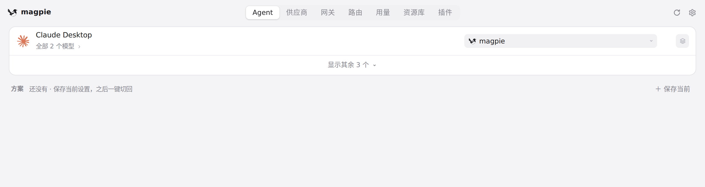
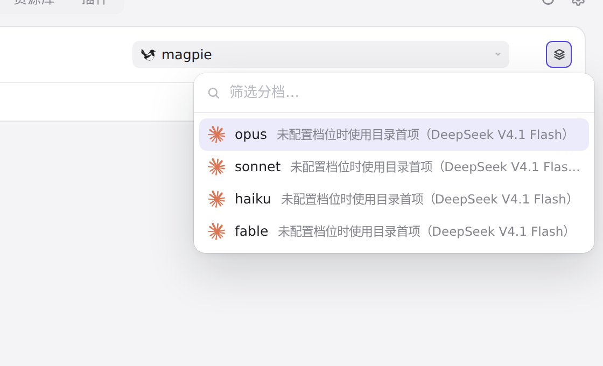
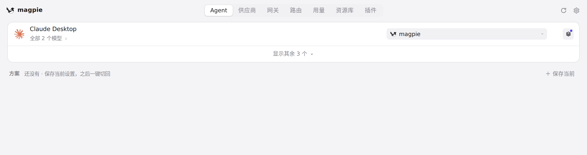
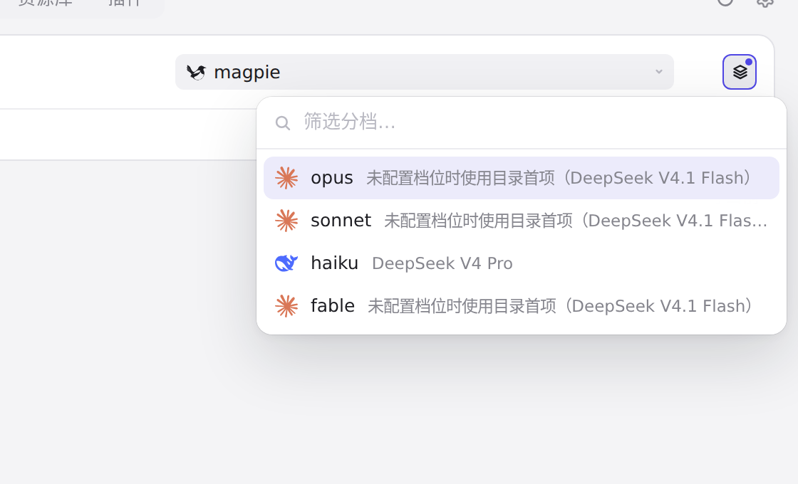

#399 界面预览
commit 098b922 · 回到 PR · 为 Claude Desktop 增加可单独配置的 opus/sonnet/haiku/fable 档位：Agent 页的 Claude Desktop 行出现分档按钮，点开后可在菜单里为每个档位挑选模型，未配置的档位在菜单和选择器里注明将使用目录首项模型；同时网关按这些档位路由并把 tier 变更标记为无需重启。
红线是鼠标走过的轨迹，红色圆环是一次点击；底部文字是这一步在做什么。空格暂停，← → 逐段查看。

Claude Desktop 的四个档位 · Claude Desktop 一行：provider 字段和右侧的分档按钮

Claude Desktop 的四个档位 · 分档菜单：opus、sonnet、haiku、fable 四项及各自下面的说明
Claude Desktop 的四个档位 · haiku 的模型选择器，注意顶部那项的说明文字

Claude Desktop 的四个档位 · 回到 Agent 页，Claude Desktop 一行现在的分档摘要

Claude Desktop 的四个档位 · 分档菜单：已配置的档位和其余档位的说明